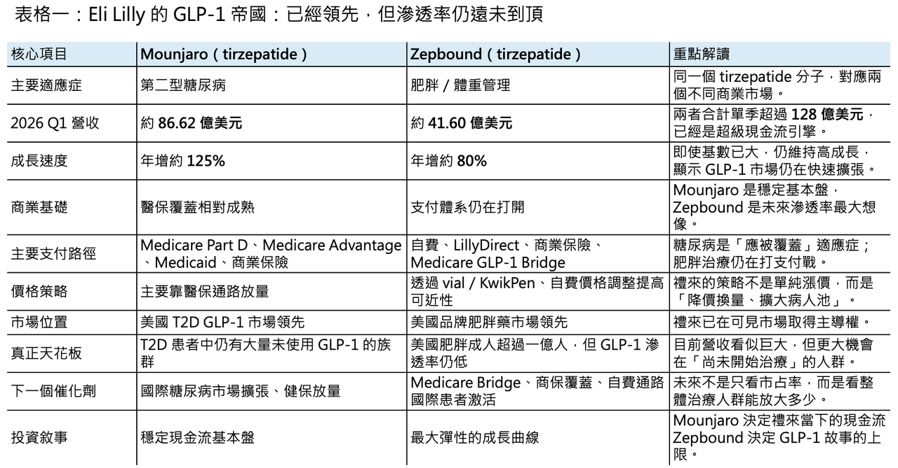
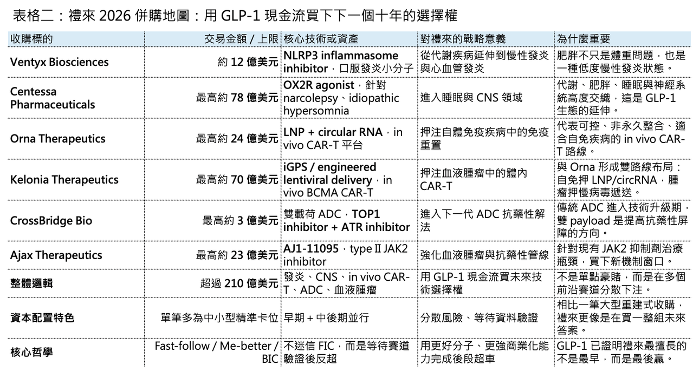

【禮來加冕 GLP-1 GOAT：一邊用 tirzepatide 印鈔，一邊用 210 億美元買下下一個十年】
分享這篇分析
把這篇文章轉給關注生技醫藥、公司研究或資本市場的朋友。
📌 古神睜眼了。

2026 年第一季，Eli Lilly 交出了一份讓整個製藥業都很難忽視的成績單：單季總營收 197.99 億美元，年增 56%；調整後 EPS 達 8.55 美元，大幅優於市場預期。真正撐起這份財報的，仍然是那個已經把全球代謝藥市場打穿的名字：tirzepatide。其中，糖尿病適應症 Mounjaro（tirzepatide） 第一季營收 86.62 億美元，年增 125%；減重適應症 Zepbound（tirzepatide） 營收 41.60 億美元，年增約 80%。兩者合計單季營收超過 128 億美元。這不是一個普通大藥品的成長曲線，而是一個產品家族正在改寫大型藥廠現金流結構的訊號。如果說 Novo Nordisk 用 semaglutide 教育了全球 GLP-1 市場，那麼 Eli Lilly 正在用 tirzepatide 重新定義這個市場的終局。
這一季 Eli Lilly 在 GLP-1 賽道完成了一次 GOAT 加冕。

01｜GLP-1 的量價關係：禮來真正厲害的，不是漲價，而是降價後還能成長
🔹 GLP-1 這場仗，Eli Lilly 可以說是贏麻了。
在美國第二型糖尿病 GLP-1 市場，Mounjaro（tirzepatide） 已經成為最強勢的成長引擎；在品牌肥胖治療市場，Zepbound（tirzepatide） 也快速取得領先位置。從美國到歐洲、日本、拉美與亞洲部分市場，tirzepatide 正在形成一種很罕見的全球同步放量。但如果只看市占率，反而會錯過這一季真正重要的事情。
真正的重點是：GLP-1 還遠遠沒有到天花板。
Eli Lilly 已經在可見市場裡做到領先，但「可見市場」本身還在擴張。這就是 GLP-1 最可怕的地方。它不是一個已經成熟、只能靠搶市占的市場，而是一個滲透率仍低、病人教育仍在早期、給付政策仍在打開、國際市場仍在啟動的超大慢病市場。第一季 tirzepatide 總收入約 128 億美元，其中 Mounjaro（tirzepatide） 約占三分之二，仍是基本盤；Zepbound（tirzepatide） 則是未來美國肥胖市場與國際減重市場的成長曲線。MarketWatch 也用一句很直接的話形容：Eli Lilly 現在每三個月就賣出約 129 億美元 GLP-1 藥物，而且公司預期還會賣得更多。
更值得注意的是量價關係。
Eli Lilly 這一季的成長不是靠漲價，而是靠量。公司財報顯示，Zepbound 在美國的營收成長主要由需求推動，但同時受到較低實現價格影響；而較低價格部分來自先前宣布的自費價格調降。這意味著 Zepbound 正在走一條很典型的慢病大藥放量路徑：先降低可負擔門檻，再用更大處方量把收入拉回來。
GLP-1 的長期勝負，不是誰短期價格最高，而是誰能在保險給付、自費管道、直銷平台與國際市場之間，找到一個可以持續擴大病人池的價格帶。Eli Lilly 從 LillyDirect、vial 低價自費方案，到後續不同劑型的價格調整，已經很明顯不是在做短期促銷，而是在建立一套新的 GLP-1 商業化基礎設施。換句話說禮來已經在重做美國肥胖用藥的病人導流系統。

02｜Mounjaro 與 Zepbound 是兩個不同故事：一個有保險，一個還在打支付戰
🔹 Mounjaro（tirzepatide） 和 Zepbound（tirzepatide） 看起來都是 tirzepatide，但商業邏輯完全不同。
Mounjaro 走的是第二型糖尿病。
這是美國醫療保險系統裡非常清楚的慢病適應症。Medicare Part D、Medicare Advantage、Medicaid 與商業保險都有相對成熟的覆蓋邏輯。雖然實務上仍會有 prior authorization、階梯治療、數量限制，但大方向是「應該被覆蓋」。所以 Mounjaro 的成長比較像一條高速公路。路已經在那裡，只要療效夠強、醫師處方習慣形成、產能跟上，就能快速放量。
Zepbound 就完全不同。
肥胖治療在美國保險體系中長期被視為一個尷尬地帶。Medicare Part D 歷來排除純減重用途藥物，Medicaid 則由各州決定是否覆蓋。即使 obesity 越來越被醫學界視為慢性疾病，美國舊有法規仍把「減重藥」放在一個很難被正式公共支付接納的位置。這也是為什麼 Zepbound 的自費通路如此重要。
第一季 Zepbound 的成長一方面來自需求，一方面也受到部分州 Medicaid 准入變化與現金支付價格調整的影響。這讓 Zepbound 的季度曲線看起來比 Mounjaro 更波動，但這不是需求疲弱，而是支付結構還沒完全打開。
真正的轉折點，是 Medicare GLP-1 Bridge。
CMS 已確認，從 2026 年 7 月 1 日起，符合資格的 Medicare 受益人可透過 Medicare GLP-1 Bridge 取得部分 GLP-1 減重藥物，包括 Wegovy（semaglutide）、Foundayo，以及 Zepbound KwikPen（tirzepatide）。值得注意的是，CMS 明確列出 Zepbound 只有 KwikPen 劑型納入 Bridge，single-dose vial 與 single-dose pen 不在此範圍內。
這個細節非常有意思。
它代表 Eli Lilly 不是單純等政策，而是先把劑型、通路與支付端做好對接。Zepbound KwikPen 被放進 Bridge，不只是產品准入，更是禮來在 2026 下半年到 2027 年打開 Medicare 肥胖治療市場的一個戰略楔子。
當然，這不是沒有不確定性。CMS 的 BALANCE Model 原本希望更系統性地擴大 Medicare 與 Medicaid 對 GLP-1 的覆蓋，但 Part D 端正式啟動已經延後，Bridge 被延長至 2027 年底，目的之一就是收集更多使用數據，為未來 Part D 實施做準備。
所以 Zepbound 的故事不是「需求不足」，而是「支付還在重塑」。
在這個階段，Eli Lilly 需要做的事很清楚：一邊用自費價格與 LillyDirect 繼續擴大市場，一邊等待 Medicare Bridge 與商業保險逐步打開，最後把 obesity 從一個自費市場，推向一個真正的慢病支付市場。
03｜GLP-1 滲透率遠未到頂：禮來真正要打的，是那 90% 還沒進場的人
現在很多人看到 Mounjaro 和 Zepbound 的營收，會本能地問一個問題：是不是已經太大了？答案很可能是：還早。
糖尿病這一端，美國第二型糖尿病成年患者基數約數千萬人。即使 GLP-1 已經成為標準治療的重要選項，在最適合用藥的族群裡，滲透率也還遠不到飽和。肥胖這一端更誇張，美國成人肥胖人口超過一億，若加上過重族群，潛在人群更大。禮來現在的市占率很高，但這個市占率是「已經在用 GLP-1 的人」裡面的市占率，不是整體符合條件患者裡的滲透率。
這兩者差很多。
如果 100 個應該治療的人裡只有 10 個進入 GLP-1 治療，而禮來在這 10 個人裡拿到 60% 份額，那它真正吃到的是 6 個人。未來最大的增量，不是從 60% 搶到 70%，而是把 10 個用藥患者變成 20 個、30 個、40 個。這也是為什麼 Eli Lilly 管理層一直強調 patient activation。在美國以外市場，GLP-1 的滲透率更低。很多國家才剛進入醫師教育、患者教育、保險談判、供應鏈放量的早期階段。當 Mounjaro 在歐洲、日本、巴西、韓國等市場逐步放量後，Eli Lilly 的國際成長曲線可能才剛開始。GLP-1 的真正天花板，不只是「全球有多少肥胖患者」，而是三個條件同時成立：
🔹 第一，患者願意開始治療。
🔹 第二，醫師願意長期處方。
🔹 第三，支付系統願意承擔。
前兩個條件，Eli Lilly 已經開始證明，第三個條件，才是接下來幾年的關鍵。
04｜現金太多怎麼辦？禮來開始用 GLP-1 的錢買下一個十年
如果只看 GLP-1，會錯過 Eli Lilly 這家公司今年最有意思的另一面。它正在瘋狂併購。2026 年開年以來，Eli Lilly 密集完成或宣布多筆交易，總交易上限已超過 200 億美元。這不是一家公司因為專利懸崖迫近而被迫補洞，而是 GLP-1 現金流太強之後，開始主動把確定性收益轉成未來技術選擇權。
這一點要和 Pfizer 當年的 Seagen 式大型補洞式收購區分開來。
Pfizer 是在 COVID-19 紅利退潮與專利壓力下，透過大額併購補足未來營收。Eli Lilly 不是。Lilly 的核心產品並沒有立即面臨斷崖式專利懸崖，反而是 Mounjaro 和 Zepbound 正在創造史詩級現金流。Fierce Pharma 統計，Lilly 2025 年全年營收超過 650 億美元，年增約 45%，核心成長來自 Mounjaro、Zepbound 等產品。換句話說，Lilly 不是沒錢才買，而是錢太多，必須把現金變成未來的敘事。這就是「千金買骨」的本質。
它買的是下一代技術路線的入場券。
05｜Ventyx：從肥胖走向發炎，GLP-1 之後是代謝－免疫閉環
🔹 2026 年 1 月，Eli Lilly 宣布以約 12 億美元現金收購 Ventyx Biosciences。Ventyx 的重點不只是單一管線，而是 oral immunology pipeline，其中最受關注的是能穿透中樞神經、瞄準 NLRP3 inflammasome 的小分子資產。Lilly 官方公告表示，這筆交易將推進口服免疫與發炎疾病療法。
這筆交易的戰略意義，在於它把 obesity 從單純體重問題，延伸到 chronic low-grade inflammation。
肥胖不是脂肪多一點而已，而是一種全身性代謝－發炎狀態。心血管、腎臟、脂肪肝、睡眠呼吸中止症，甚至部分神經退化疾病，都可能和代謝發炎有連結。因此，Eli Lilly 買 Ventyx，不只是買一個免疫資產，而是在建立一個更大的閉環：🔹GLP-1 / GIP 負責體重與代謝控制🔹NLRP3 負責發炎軸線，未來再往心血管與神經退化延伸。這不是傳統意義上的「補一條管線」，而是在把代謝疾病重新定義為跨器官、跨系統的慢性病平台。
06｜Centessa：從體重進入睡眠，代謝巨頭開始碰 CNS
接著，Eli Lilly 又用高達 78 億美元的交易價格收購 Centessa Pharmaceuticals，取得其 orexin receptor 2（OX2R）agonist 管線。Centessa 的核心候選藥物 cleminorexton（formerly ORX750） 已在 narcolepsy type 1、narcolepsy type 2 與 idiopathic hypersomnia 的 Phase 2a 研究中展現潛在 best-in-class 特徵。
這筆交易看似和 GLP-1 無關，但其實很有連貫性。
代謝、睡眠與神經系統本來就高度交織。肥胖患者常合併阻塞性睡眠呼吸中止症，睡眠障礙也會反過來惡化代謝狀態。當 Zepbound 已經在睡眠呼吸中止症相關疾病中取得臨床與商業關注後，Lilly 進一步切入 orexin pathway，並不突兀。這不是單純買一個 narcolepsy 藥。
這是在把 Eli Lilly 從「減重藥公司」推向更大的 cardiometabolic-neuroscience 生態。如果未來 GLP-1 是慢病入口，那睡眠、發炎、心血管、神經精神症狀，都可能成為 Lilly 繼續擴展的方向。
07｜Orna + Kelonia：in vivo CAR-T 兩條路線都要，禮來不做選擇題
🔹 最精彩的是 in vivo CAR-T。
2 月，Eli Lilly 宣布以最高 24 億美元收購 Orna Therapeutics，取得 circular RNA 與 lipid nanoparticle（LNP）相關平台，推進 in vivo CAR-T 與細胞治療。官方公告明確指出，Orna 的 in vivo CAR-T pipeline 具有重置 B cell-driven autoimmune diseases 的潛力。不到兩個月後，Lilly 又宣布以最高 70 億美元收購 Kelonia Therapeutics。Kelonia 的核心是 iGPS 體內基因遞送平台，以及 Phase 1 的 KLN-1010，一款針對 relapsed / refractory multiple myeloma 的 in vivo BCMA CAR-T。這筆交易包含 32.5 億美元 upfront 與後續里程碑付款。這兩筆交易放在一起看，才看得出 Lilly 的思路。Orna 代表 LNP + circular RNA 路線，偏向短期、可控、非永久整合，特別適合自體免疫疾病中的免疫重置。
Kelonia 代表 lentiviral in vivo gene delivery，偏向更持久、更接近傳統 CAR-T 在腫瘤中的邏輯，特別適合血液腫瘤。其他大藥廠很多是選邊站。AstraZeneca 收 EsoBiotec，AbbVie 押 Capstan，Gilead / Kite、BMS 也各自布局不同 in vivo cell therapy 路線。
Lilly 的打法是：不做選擇題，兩條路都買。
這不是亂買，而是對前沿技術高度不確定性的對沖。in vivo CAR-T 最後到底是 LNP 更適合自免，還是 lentiviral delivery 更適合腫瘤，目前沒有人能百分之百確定。Lilly 的做法是把兩張最有價值的票都拿在手上，等時間來驗證。這就是現金流強大時才能做的事。
08｜CrossBridge 與 Ajax：在腫瘤裡買下一代抗藥性解法
🔹 Lilly 今年的 oncology 併購也很有意思。
4 月，Lilly 連續出手收購 CrossBridge Bio 與 Ajax Therapeutics。CrossBridge 聚焦下一代 ADC 平台，其代表性資產 CBB-120 為 TROP2-directed dual-payload ADC，同時搭載 TOP1 inhibitor 與 ATR inhibitor，試圖用雙載荷策略提高抗藥性屏障。BioSpace 也將 CrossBridge、Kelonia、Ajax 視為 Lilly 近期連續 oncology deal 的一部分。而 Ajax Therapeutics 則帶來 AJ1-11095，一款針對 type II JAK2 conformation 的 first-in-class 分子，交易最高可達 23 億美元。Reuters 報導指出，Lilly 收購 Ajax 是為了擴充 oncology pipeline，特別是血液腫瘤方向。
這兩筆交易的共同點，是抗藥性。
ADC 已經從第一代 target-payload 故事，進入 payload 組合、linker、bystander effect、耐藥機制管理的新階段。JAK2 則是 myeloproliferative neoplasms 裡長期存在治療需求與抗藥性問題的領域。Lilly 在 oncology 上不是追最熱的 PD-1，也不是簡單跟風 ADC，而是在買下一代機制升級的選擇權。
09｜禮來的併購哲學：不是 FIC 崇拜，而是 BIC 反超
🔹 Eli Lilly 這家公司最值得研究的地方，不是它永遠第一個入局。事實上，它很多時候不是第一個。GLP-1 市場，Novo Nordisk 先用 semaglutide 打開減重市場，Lilly 再用 tirzepatide 後來居上。
CDK4/6、BTK、Alzheimer’s disease、免疫、代謝等領域，Lilly 很多時候也不是第一個衝線者，而是等靶點與市場被初步驗證後，再以更好的分子、更強的商業化能力、更有耐心的臨床策略，完成 me-better 甚至 best-in-class 反超。
這套打法是一種高度紀律化的時間差套利。
FIC 產品承擔最高的科學風險、臨床風險、監管教育成本與市場教育成本。Fast follower 看到路徑被跑通後，可以更精準地設計分子、更清楚地選擇適應症、更有效率地進行商業化。Lilly 擅長的不是每次都最早，而是常常能在關鍵時刻用更好的產品完成反超。GLP-1 就是最好的證明。
Novo 開創市場，Lilly 加冕 GOAT。這不是偶然，而是一種組織能力。
10｜台灣「減重藥概念股」
第一類是 台耀（4746）、保瑞（6472）。近年兩家公司持續從 API 往高階針劑與 CDMO 延伸，偏 CDMO 與國際製造平台。若未來 GLP-1、口服 incretin、小分子代謝藥、複方代謝產品與相關特殊劑型大量出現，真正有價值的是能否承接國際製造、放大、法規與品質系統需求。第二類是 奧孟亞（7776）、康霈（6919）。屬於新療法在療效上、給藥上做出新的差異化價值。
【結語｜禮來真正買的不是公司，而是未來所有可能的答案】
回到最初的問題：Eli Lilly 今年這一輪密集併購，到底在拼什麼？
在做一件更大的事：把 GLP-1 帶來的確定性現金流，轉化成下一個十年的技術選擇權。
✨ Ventyx 是代謝－發炎閉環。
✨ Centessa 是代謝－睡眠－CNS 延伸。
✨ Orna 和 Kelonia 是 in vivo CAR-T 兩條底層技術路線的雙重押注。
✨ CrossBridge 是下一代 ADC 抗藥性解法。
✨ Ajax 是血液腫瘤 JAK2 抗藥性的新機制窗口。
這些交易單獨看，每一筆都有風險。但放在一起看，就是一個極具 Eli Lilly 風格的投資組合：
不用一筆巨額收購賭單一路線。而是在多個前沿技術分歧點上，提前買下入場券。讓時間、數據與臨床自己決定誰會勝出。這正是現金流強大到一定程度後，大藥廠最理性的資本配置。
GLP-1 給了 Lilly 當下的王冠。而這一連串併購，將替它買下未來的製藥王國。
參考資料：
- [0]: 各公司官網＆公開資料
- [1]: Lilly reports first-quarter 2026 financial results, raises full year guidance, and highlights momentum of new medicines Revenue in Q1 2026 increased 56% to $19.8 billion primarily driven by volume growth, partially offset by lower realized prices from Mounjaro and Zepbound. Q1... www.prnewswire.com
- [2]: marketwatch.com https://www.marketwatch.com/story/lillys-stock-rallies-as-sales-of-glp-1-drugs-nearly-double-09c01977 www.marketwatch.com
- [3]: Medicare GLP-1 Bridge | CMS Centers for Medicare & Medicaid Services (CMS) announced the Better Approaches to Lifestyle and Nutrition for Comprehensive hEalth (BALANCE) Model and a separate short-term demonstration (now called the “Medicare GLP-1 Bridge”) www.cms.gov
- [4]: BALANCE (Better Approaches to Lifestyle and Nutrition for Comprehensive hEalth) Model | CMS The BALANCE Model aims to increase access to select GLP-1 medications and healthy lifestyle interventions — to help people with Medicare and Medicaid improve their health. www.cms.gov
- [5]: The top 20 pharma companies by 2025 revenue | Fierce Pharma Boosted by a 45% increase in sales in 2025, Eli Lilly has jumped six notches in the annual top-20 revenue ranking, becoming the third-largest company in the biopharma industry. www.fiercepharma.com
- [6]:
- [7]: Lilly to acquire Centessa Pharmaceuticals to advance treatments for sleep-wake disorders /PRNewswire/ -- Eli Lilly and Company (NYSE: LLY) and Centessa Pharmaceuticals plc (Nasdaq: CNTA), a clinical-stage company developing a new class of medicines... www.prnewswire.com
引用本文
若在簡報、報告或社群討論引用，建議附上 Drugnews 原文連結。
Drugnews 編輯部，〈減肥藥還是太強了，禮來 猛健樂 賺爛！〉，Drugnews｜藥時事，2026/05/08，https://drugnews.com.tw/articles/2026-05-08-lilly-tirzepatide-glp1-growth.html